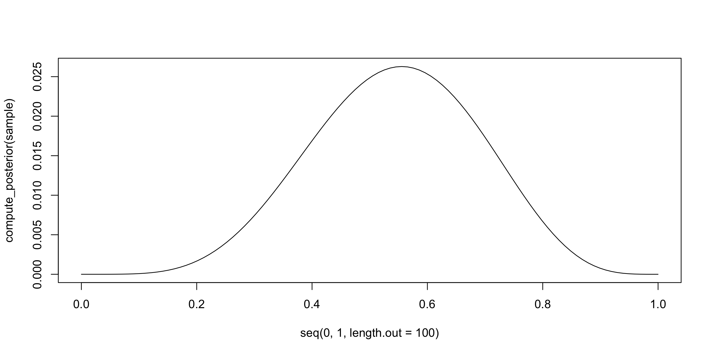
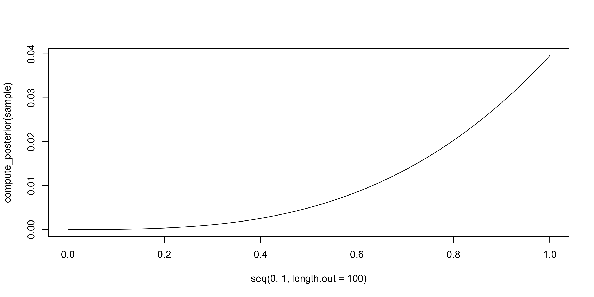
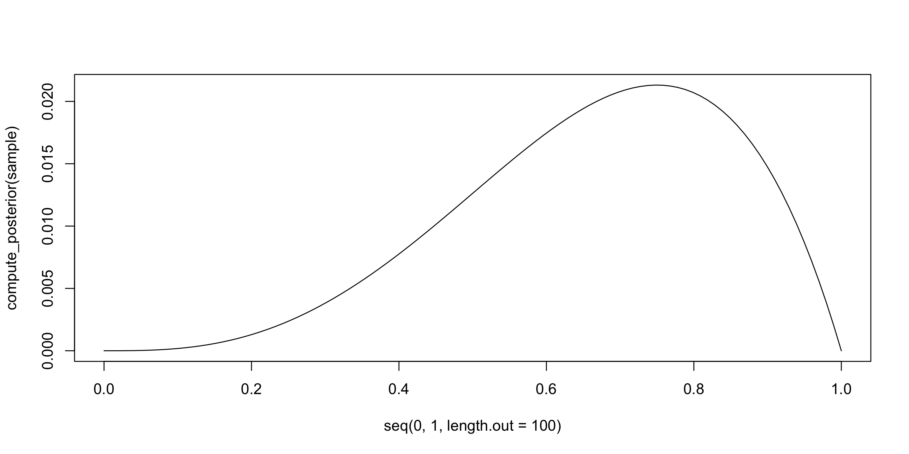
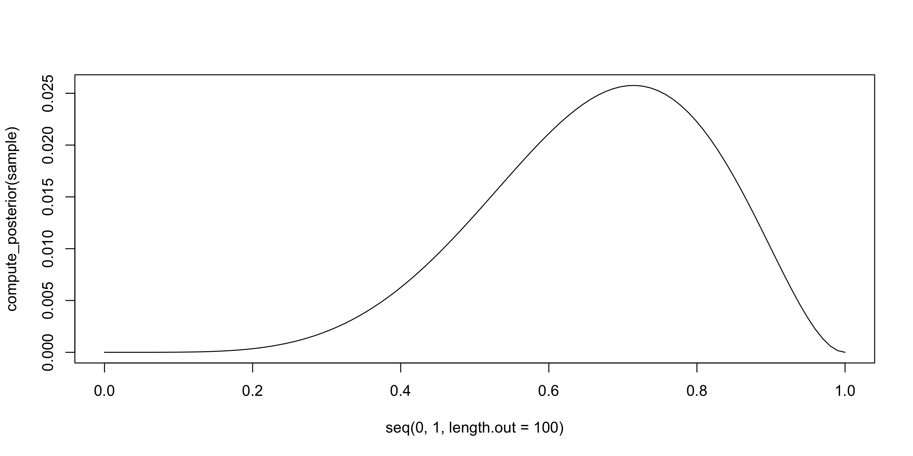
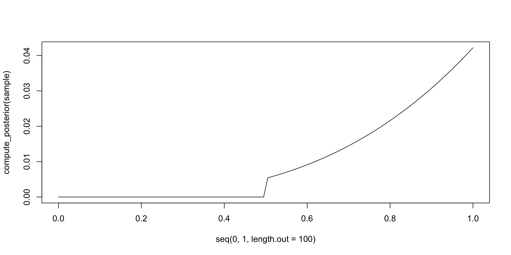
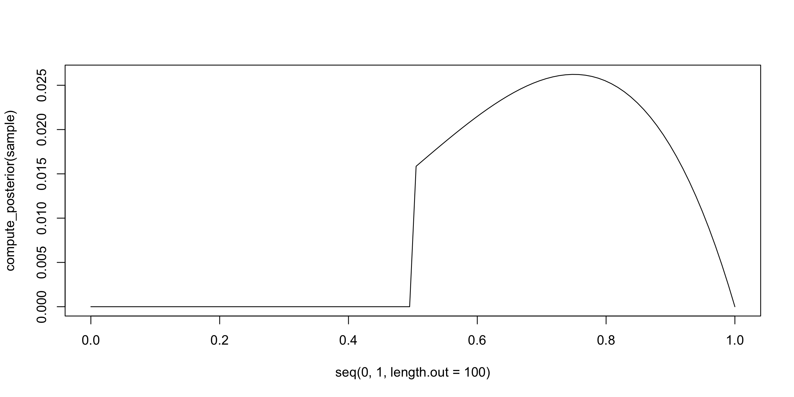
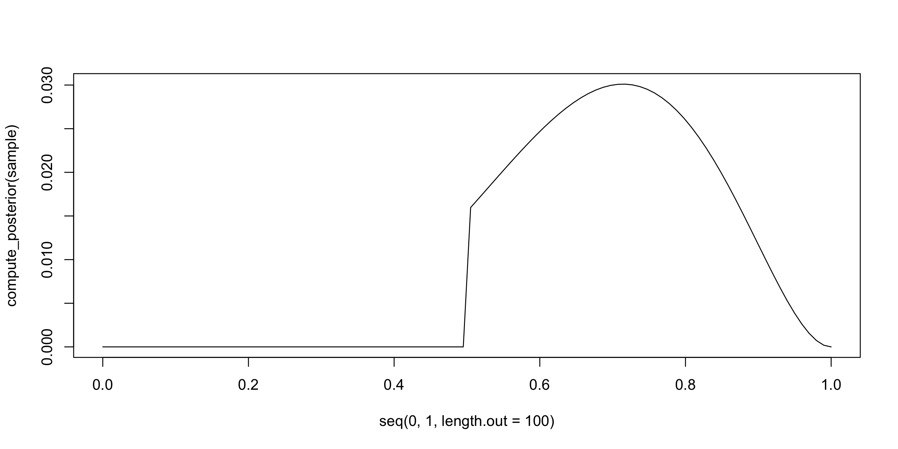

library(tidyverse)
library(cowplot)Week 1: Introduction to Bayesian Analysis
Gardens of forking data
Workspace setup:
Bayes’ Theorem
Recall from last lecture, the probability that a specific hypothesis, H, is true given a set of data, D, is defined as:
\[ P(H|D) = \frac{P(H)P(D|H)}{P(D)} \]
You can get there via some calculus, but there are other, more intuitive ways of getting to this value. Today, we’re going to build up the intuition of this formula.
Globe tossing experiment
Suppose you have a globe representing the planet, and you want to estimate how much of the surface is covered in water. You adopt the following strategy: You toss the globe in the air, and when you catch it, you write down whether the surface under your right thumb is water or land.
Write a function to simulate tosses of this globe. Make sure your function allows you to vary N, the number of tosses, and p, the true proportion of water on the globe.
# function to toss a globe covered p by water N times
sim_globe = function( p=0.7 , N=9 ){
sample(
x = c("W", "L"), # possible values
size = N, # how many draws
prob = c(p, 1-p), # probability of each possibility
replace = TRUE # the same value can be drawn multiple times
)
}
sim_globe()[1] "L" "L" "L" "L" "W" "W" "W" "W" "L"\[ P(H|D) = \frac{P(H)P(D|H)}{P(D)} \]
- \(P(H)\) is the prior, and that is set by the researcher.
- \(P(D)\) is the probability of the data given all possible hypotheses, and is therefore the sum of all the \(P(H) \times P(D|H)\).
- So we only need to find \(P(D|H)\) or the probability of a sample given a specific, hypothetical value of \(H\).
What probability distribution would represent the likelihood of a specific sample of water and land given a known propotion of water?
–
The binomial distribution.
dbinom(x = 6, size = 9, prob = .7)[1] 0.2668279exercise
Write a function that computes the posterior distribution of \(p\), the true proportion of water, based on a given sample and a flat prior.
\[ P(H|D) = \frac{P(H)P(D|H)}{P(D)} \]
- \(P(H)\) is the prior, and that is set by the researcher.
- \(P(D)\) is the probability of the data given all possible hypotheses, and is therefore the sum of all the \(P(H) \times P(D|H)\).
- So we only need to find \(P(D|H)\) or the likelihood of a sample given a specific, hypothetical value of \(H\).
exercise: solution
compute_posterior = function(sample, poss = seq(0,1,length.out=100)){
W = sum(sample == "W")
L = sum(sample == "L")
likelihood = sapply( poss, function(x) dbinom(x = W, size = W+L, prob = x))
post = ( likelihood ) / sum( likelihood)
return(post)
}Testing it out:
(sample = sim_globe())[1] "W" "L" "W" "L" "W" "W" "L" "L" "W"compute_posterior(sample) [1] 0.000000e+00 1.285059e-09 3.946894e-08 2.875476e-07 1.162018e-06
[6] 3.399226e-06 8.104135e-06 1.677491e-05 3.130647e-05 5.397606e-05
[11] 8.741352e-05 1.345590e-04 1.986103e-04 2.829627e-04 3.911420e-04
[16] 5.267348e-04 6.933155e-04 8.943729e-04 1.133238e-03 1.413014e-03
[21] 1.736509e-03 2.106170e-03 2.524032e-03 2.991659e-03 3.510103e-03
[26] 4.079862e-03 4.700854e-03 5.372388e-03 6.093154e-03 6.861211e-03
[31] 7.673990e-03 8.528305e-03 9.420364e-03 1.034580e-02 1.129969e-02
[36] 1.227662e-02 1.327068e-02 1.427559e-02 1.528466e-02 1.629096e-02
[41] 1.728728e-02 1.826627e-02 1.922049e-02 2.014248e-02 2.102484e-02
[46] 2.186030e-02 2.264181e-02 2.336260e-02 2.401627e-02 2.459682e-02
[51] 2.509880e-02 2.551728e-02 2.584799e-02 2.608731e-02 2.623237e-02
[56] 2.628105e-02 2.623207e-02 2.608495e-02 2.584009e-02 2.549873e-02
[61] 2.506301e-02 2.453591e-02 2.392125e-02 2.322370e-02 2.244867e-02
[66] 2.160235e-02 2.069160e-02 1.972389e-02 1.870725e-02 1.765018e-02
[71] 1.656154e-02 1.545050e-02 1.432637e-02 1.319855e-02 1.207639e-02
[76] 1.096907e-02 9.885483e-03 8.834113e-03 7.822918e-03 6.859209e-03
[81] 5.949534e-03 5.099572e-03 4.314034e-03 3.596574e-03 2.949715e-03
[86] 2.374791e-03 1.871907e-03 1.439925e-03 1.076472e-03 7.779804e-04
[91] 5.397606e-04 3.561111e-04 2.204702e-04 1.256141e-04 6.390545e-05
[96] 2.759794e-05 9.201524e-06 1.914244e-06 1.259357e-07 0.000000e+00plot(seq(0,1,length.out=100), compute_posterior(sample), type = "l")
exercise
Compute and plot the grid approximate posterior distribution for each of the following sets of observations. In each case, assume a uniform prior for \(p\):
- W W W
- W W W L
- L W W L W W W
exercise: solution p1
sample = c("W", "W", "W")
plot(seq(0,1,length.out=100), compute_posterior(sample), type = "l")
exercise: solution p2
sample = c("W", "W", "W", "L")
plot(seq(0,1,length.out=100), compute_posterior(sample), type = "l")
exercise: solution p3
sample = c("L", "W", "W", "L", "W", "W", "W")
plot(seq(0,1,length.out=100), compute_posterior(sample), type = "l")
exercise
Now assume a prior for \(p\) that is equal to zero when \(p < 0.5\) and is a positive constant when \(p ≥ 0.5\). Again compute and plot the grid approximate posterior distribution for each of the sets of observations in the prior problem.
exercise: solution
compute_posterior = function(sample, poss = seq(0,1,length.out=100)){
W = sum(sample == "W")
L = sum(sample == "L")
prior = ifelse(poss < .5, 0, 1)
likelihood = sapply( poss, function(x) dbinom(x = W, size = W+L, prob = x))
post = ( prior*likelihood ) / sum( prior*likelihood)
return(post)
}sample = c("W", "W", "W")
plot(seq(0,1,length.out=100), compute_posterior(sample), type = "l")
sample = c("W", "W", "W", "L")
plot(seq(0,1,length.out=100), compute_posterior(sample), type = "l")
sample = c("L", "W", "W", "L", "W", "W", "W")
plot(seq(0,1,length.out=100), compute_posterior(sample), type = "l")
exercise
Suppose the globe tossing data had turned out to be 8 water in 15 tosses. Construct the posterior distribution, using grid approximation. Use the same flat prior as before.
Draw 10,000 samples from the grid approximation from above. Then use the samples to calculate the 90% HPDI for \(p\).
exercise: solution
p_grid <- seq( from=0 , to=1 , length.out=1000 )
prior <- rep( 1 , 1000 )
likelihood <- dbinom( 8 , size=15 , prob=p_grid )
posterior <- likelihood * prior
posterior <- posterior / sum(posterior)
set.seed(100)
samples <- sample( p_grid , prob=posterior , size=1e4 , replace=TRUE )
rethinking::HPDI(samples, prob = .90) |0.9 0.9|
0.3343343 0.7217217 exercise
Construct a posterior predictive check for this model and data. This means simulate the distribution of samples, averaging over the posterior uncertainty in \(p\). What is the probability of observing 8 water in 15 tosses?
exercise: solution
dummy_w <- rbinom(1e4, 15, prob = samples)
table(dummy_w)dummy_w
0 1 2 3 4 5 6 7 8 9 10 11 12 13 14 15
6 32 129 272 526 851 1192 1393 1425 1405 1110 815 449 285 86 24 sum(dummy_w == 8)/1e4[1] 0.1425exercise
Now use a prior that is zero below \(p <.5\) and a positive constant otherwise. Repeat each problem above and compare the inferences. What difference does the better prior make?
- Calculate the 90% HDPI.
- What is the probability of observing 8 water in 15 tosses?
exercise: solution
p_grid <- seq( from=0 , to=1 , length.out=1000 )
prior <- ifelse(p_grid < .5, 0, 1)
likelihood <- dbinom( 8 , size=15 , prob=p_grid )
posterior <- likelihood * prior
posterior <- posterior / sum(posterior)
set.seed(100)
samples <- sample( p_grid , prob=posterior , size=1e4 , replace=TRUE )
rethinking::HPDI(samples, prob = .90) |0.9 0.9|
0.5005005 0.7097097 exercise: solution
dummy_w <- rbinom(1e4, 15, prob = samples)
table(dummy_w)dummy_w
1 2 3 4 5 6 7 8 9 10 11 12 13 14 15
2 7 35 132 347 684 1081 1630 1776 1667 1273 769 388 184 25 sum(dummy_w == 8)/1e4[1] 0.163